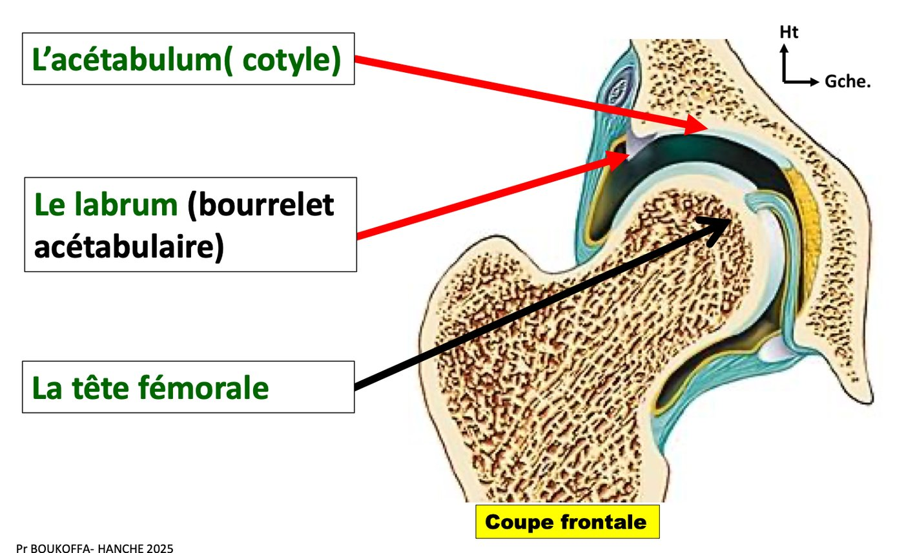
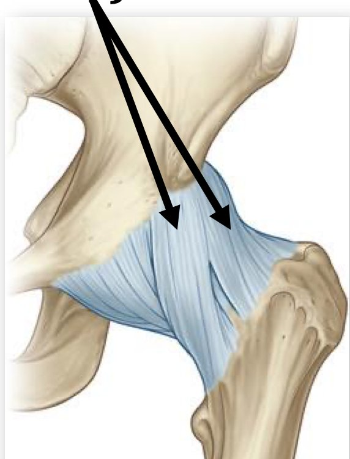
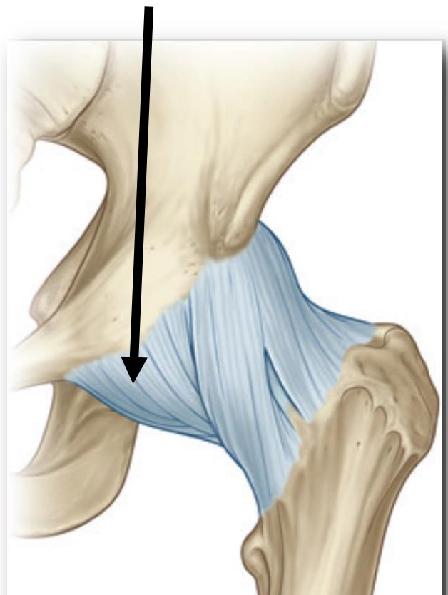
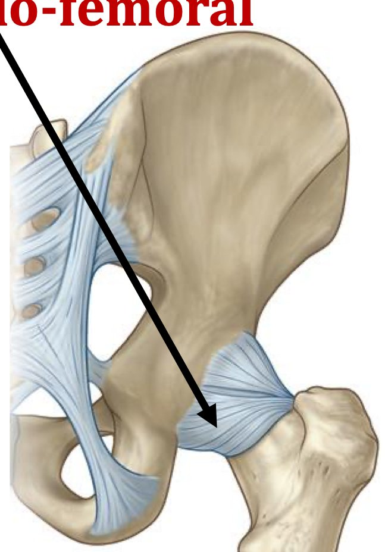

S1 · Anatomy · Summary
Hip joint
- Essentials
- Definition
- Articular surfaces
- Capsule & ligaments
- Ligament of the head
- Active ligaments
- Movements
- Clinical
- Exam traps
- Self-check
If you remember only this
- Hip (coxofemoral) joint = the only joint connecting the lower limb to the trunk; proximal ball-and-socket (spheroid); deep, weight-bearing, mobile, highly congruent; very stable.
- Acetabulum: central acetabular fossa (non-articular) + peripheral semilunar surface (articular, crescent) → only partly covered with cartilage. Bordered by the acetabular (cotyloid) labrum, which bridges the notch as the transverse ligament.
- Femoral head = 2/3 of a sphere, fovea capitis in the centre (ligament of the head).
- Capsule: acetabular limbus + labrum → intertrochanteric line + femoral neck.
- Passive ligaments: iliofemoral (anterior, triangular, strongest, 2 bundles; called Bertin's in the notes), pubofemoral (iliopectineal eminence → pretrochanteric depression), ischiofemoral (posterior).
- Ligament of the head (round ligament): intra-articular, extra-synovial, carries an artery to the femoral head; fovea → 3 bundles.
- Flexion 120° knee bent / 90° knee extended; extension 10° / 20°; abduction 30° (forced 45–60°); adduction 30°.
Introduction p. 3 slides p. 10
- The hip (coxofemoral) joint is the single joint connecting the lower limb to the trunk.
- Proximal ball-and-socket (spheroid) joint of the lower limb, with a double role: support and stability.
- Supports the pelvis, orients the limb in all directions and ensures the upright posture typical of humans.
- Deep, weight-bearing, mobile and highly congruent.
1. Articular surfaces p. 3 slides p. 12–18 2023-24
| Surface | Features |
|---|---|
| Acetabulum (cotyle) 🎯 | Deep cavity on the lateral surface of the hip bone, bordered by a prominent rim, the acetabular limbus. 2 parts: central, non-articular = acetabular fossa; peripheral, articular, crescent-shaped = semilunar surface |
| Acetabular labrum (cotyloid rim) 🎯 | Fibrocartilaginous ring on the perimeter of the acetabulum; bridges the ischiopubic notch as the transverse ligament of the acetabulum. Roles: evens out the limbus, increases depth and extent of the acetabulum |
| Femoral head | Rounded, 2/3 of a sphere; fovea capitis at its centre for the ligament of the femoral head (ligamentum teres) |

2. Means of union — capsule and passive ligaments p. 3–4 slides p. 20–26 2023-24
Capsule + passive and active ligaments (which reinforce the capsule) + the ligament of the femoral head keep the surfaces in contact.
| Structure | Description |
|---|---|
| Joint capsule | Fibrous sleeve. Iliac insertion: acetabular limbus and labrum. Femoral insertion: intertrochanteric line and femoral neck |
| Iliofemoral ligament (Bertin's ligament) | Anterior, triangular, strong; acetabulum → intertrochanteric line. 2 bundles: superior ilio-pretrochanteric, inferior ilio-pretrochantinian |
| Pubofemoral ligament 🎯 | Reinforces the anteroinferior capsule; iliopectineal eminence → pretrochantinian depression |
| Ischiofemoral ligament | Reinforces the posterior capsule; ischium → femoral neck |



2.3 Ligament of the femoral head (round ligament) p. 4 slides p. 28–29, 36 2023-24
- Intra-articular and extra-synovial; centred on an artery that supplies the femoral head.
- From the fovea capitis → 3 bundles: anterior on the anterior horn of the semilunar surface; middle on the transverse ligament; posterior on the ischium.
- Its synovium is its own, independent of the joint synovium; attached around the fovea capitis and the acetabular fossa.
- (Slides) In dislocations, risk of rupture of the round ligament → necrosis of the femoral head.
2.4–3. Active ligaments (periarticular muscles) and synovium p. 4 slides p. 31–36
| Position | Muscles |
|---|---|
| Anterior | Iliopsoas, rectus femoris, sartorius |
| Lateral | Tensor fasciae latae, gluteus medius, gluteus minimus |
| Posterior | Gluteus maximus, pelvi-trochanteric muscles, hamstrings |
| Medial | Pectineus, adductor longus, adductor magnus |
The synovium lines the deep surface of the capsule (the ligament of the head has its own separate synovium, see above).
4. Joint physiology p. 4–5 slides p. 38–49 2025-26
Very stable (capsule, ligaments, periarticular muscles) with a wide range of motion. All axes pass through the centre of the femoral head.
| Axis | Movement | Definition | Range |
|---|---|---|---|
| Transverse | Flexion 🎯 | Front of the thigh toward the anterior abdominal wall | 120° knee bent · 90° knee extended |
| Extension | Front of the thigh away from the abdominal wall | 10° knee bent · 20° knee extended | |
| Anteroposterior | Abduction | Thigh away from the midline | Usual 30°; forced 45–60° (gymnastics) |
| Adduction | Thigh toward the midline | 30° max | |
| Vertical | Lateral rotation | — | Notes 45–60°; slide 60° |
| Medial rotation | — | Notes 30–45°; slide 30° |
Circumduction = succession of the 4 movements (flexion, extension, abduction, adduction).
Memory trick
Flexion and extension swap when the knee changes: flexion 120 → 90, extension 10 → 20 (knee bent → knee extended). The two "bent" numbers
(120, 10) are the extremes.
5. Clinical applications p. 5 slides p. 51–60
- Radio-anatomy: ultrasound, CT (± arthrography), MRI (± arthrography) to study tendons, bone, capsule and ligaments, fibrocartilage, muscles.
- Coxarthrosis (hip osteoarthritis); arthritis (serious inflammation or infection; prostheses); fractures of the femoral neck or acetabulum.
- Dislocations are rare because the joint is stable (slides: posterior, pubic and obturator ones; risk of round-ligament rupture and head necrosis).
- Congenital hip dislocation: detected at birth by the Ortolani manoeuvre (looks for instability while moving the hips); treated by swaddling the baby with the hips in forced abduction.
Exam traps
False statements to recognise
- The pubofemoral ligament "attaches to the ischial tuberosity", "is intrasynovial", "is an active ligament" — false. 2023-24
- The ligament of the head "is intrasynovial and intracapsular" or "reinforces the capsule" — false: intra-articular, extra-synovial; it carries the artery of the head (nourishing role = true). 2023-24
- The acetabulum "is the only articular surface of the hip bone", "is surrounded by the glenoid labrum", "is entirely covered with cartilage" — false: cotyloid labrum, only the semilunar surface is articular. 2023-24
- Hip flexion with the knee extended = 100–130° — false: 90° (120° is with the knee bent). 2025-26
⚠️ Key vs PDF conflict
The official key of 2023-24 Q36 marks "the pubofemoral ligament was formerly called the ligament of Bertin" as true, but this PDF gives
"Bertin's ligament" as the other name of the iliofemoral ligament (notes p. 3, slide p. 24). Know both: the course says iliofemoral = Bertin; the 2023-24
key accepted it for the pubofemoral. Check with your teacher.
Self-check
Give 4 adjectives the course uses for the hip joint.
Deep, weight-bearing, mobile, highly congruent (and very stable).
What are the two parts of the acetabulum?
Central non-articular acetabular fossa; peripheral articular crescent = semilunar surface.
Describe the acetabular labrum and its roles.
Fibrocartilaginous ring on the acetabular rim, bridging the ischiopubic notch as the transverse ligament; evens out the limbus and increases depth and
extent.
Where does the capsule insert?
Acetabular limbus and labrum; intertrochanteric line and femoral neck.
Describe the 3 passive ligaments.
Iliofemoral: anterior, triangular, strong, 2 bundles, acetabulum → intertrochanteric line. Pubofemoral: anteroinferior, iliopectineal eminence →
pretrochantinian depression. Ischiofemoral: posterior, ischium → femoral neck.
Describe the ligament of the femoral head.
Intra-articular, extra-synovial, with an artery to the head; fovea capitis → anterior horn of semilunar surface, transverse ligament, ischium. Own synovium.
Name the periarticular muscles by side.
Anterior: iliopsoas, rectus femoris, sartorius. Lateral: TFL, gluteus medius and minimus. Posterior: gluteus maximus, pelvi-trochanteric, hamstrings. Medial:
pectineus, adductor longus and magnus.
Flexion and extension ranges, knee bent vs extended.
Flexion 120° (bent) / 90° (extended). Extension 10° (bent) / 20° (extended).
Ranges of abduction, adduction and rotations.
Abduction 30° (forced 45–60°); adduction 30°; lateral rotation 45–60°; medial rotation 30–45°.
How is congenital hip dislocation detected and treated?
At birth, Ortolani manoeuvre; swaddling with hips in forced abduction.